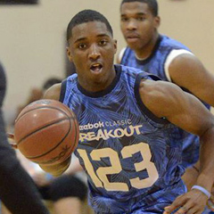
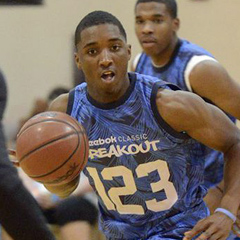

Out of 106 total votes, Chris Clarke, a 6-foot-6 combination forward out of Virginia Beach (Va.) Cape Henry Collegiate, received the most with 14.
| Most Competitive Voting |
|  | |
| Mitchell is due a jump in rankings |
Scout.com talked to more than 100 college coaches to get their take on who was the most competitive player they saw during their July travels.
| Most Competitive Voting |
|  | |
| Mitchell is due a jump in rankings |
 Static Content for Story Detail is ready.
Static Content for Story Detail is ready.